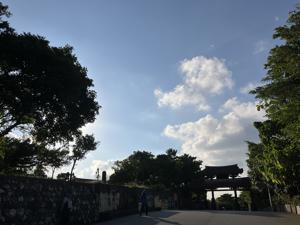
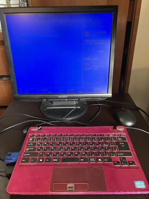

うるがいの話 ある日
最新: Windows10サポート終了【うるがいの話 ある日】とは 一日だけのプログです
『うるがいの話』の最新一日だけのプログで、通信料が少なく経済的だ。カニの画像をクリックすると全ての日付が載る『うるがいの話』サイトを表示します
|
|
【うるがいの話】 うるがい(ｳﾙｶﾞｲ urugai)とは、『もずくがに』の名前でとても大きくなります。 |
|---|---|
|
|
【カミマヤーの話】 猫のことを方言でマヤーといいます。カミマヤー（kamimayaa）とは、神の猫のことです。 |
|
【たながぁの音楽】 たながぁ（ﾀﾅｶﾞｰ tanagaa）とは手長えびのことで、何種類かあり大きいのは車 エビぐらいになります。 |

|
【ぶながぁの話】 ぶながぁ(ﾌﾞﾅｶﾞｰ bunagaa)とは、赤い髪の毛、赤い身体、そして身長は１ｍ２０ｃｍ ぐらい、川の蟹を食べているの目撃された。場所は沖縄県国頭郡大宜味村のと ある村僕の隣近所に住んでいる爺さんから、聞いた話です。 |
|
|
【ギーマの話】 ギーマ(giima)とは、山原の里山に咲くスズランに似た、 花を付けます。実は食べられます、 気が付くと口の周りが紫になっています。 |
2025年10月14日 (火）Windows10サポート終了
16:18

とうとう、Windows10サポート終了の日がきました。ここ数日バ
タバタしています。
【Windows10サポート終了まであと3日！】不用になったパソコ
ンは適切に処分しましょう
10/14（火）Windows10 のサポートが終了します！
現在お使いのパソコンのOSを至急ご確認ください！
パソコンを無料で回収してくれる【リネットジャッパン】からの
メールが届いた。あれとこれと、オ！、もしかして子供の使って
いたノートブック、動かしてみるかと電源を入れたら、無反応。
調べたら、メモリと内臓ディスクが無かった。そういえば、２年
前にメモリを、別のノートパソコンに流用したんだった。ところ
が、そのノートパソコンもモニタの半分が、見えなくなってしま
って廃棄しようかと迷っている。取りあえず、そこから移したメ
モリを取って、内臓ディスクも付けて、インストールしようとし
たら、ＤＶＤが壊れている！。そもそも、モニタパネルもないの
で外付けのモニタを使っているのに！、で外付けのＤＶＤをつけ
た・・・、何や動く・・、がやはり延命は行えなかった。

それではと、モニタの半分のノートパソコンに外付けモニタを付
けて利用してみるか。メモリを付け直して、２０２３年７月１４
日の内臓ディスクを利用して、アップデートを行う。そして、か
ねてから調べていた【Ｗｉｎｄｏｗｓ１０が１年延命！２０２６
年１０月まで無料で使える】を無事適用した。これで、パソコン
の予備機を確保できた、パチパチ。で、不用になったパソコンは
３台、今週末に引き取ってもらうことにした。
今日から、少し気温が下がっている。午後３時から、クラーを止
めた。